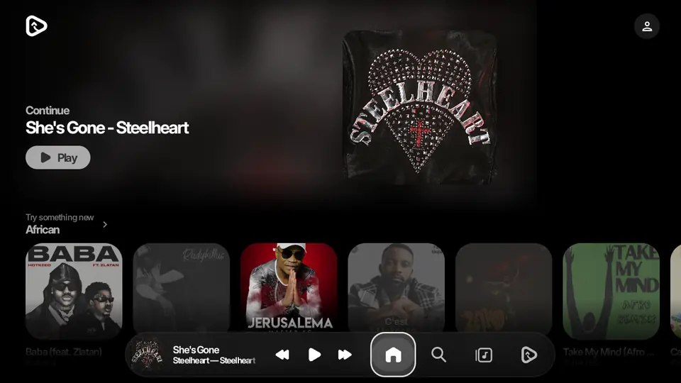
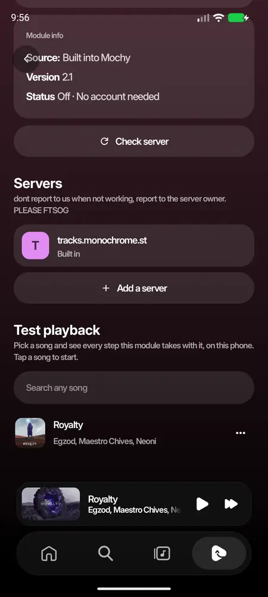

hello, im the one making mochy. this wiki is where i explain how the app works and how to make your own modules for it. i tried to keep it with a lot of pictures instead of a wall of code, becuase reading code in docs is boring lol.
everything here comes from the real app, the screenshots are from the latest build. if something looks diffrent on your phone, you're probably on an older version, go update :p
mochy has four tabs at the bottom, plus the player that lives right above them. tap the bar below, it switches just like in the app:
Home: picked for you
Homewhat to play
→
Searchfind anything
→
Libraryyours
→
Profilestats + settings
tapping a tab you're already on scrolls it back to the top. tapping it from a page deeper inside (an album, a playlist) takes you back to the tab's own page, like every tab bar does.
Installing
getting mochy on your phone
go to the releases page and download the apk. arm64 is for almost every phone, universal works everywhere but its bigger.
open it, android asks if you trust the source, say yes.
open mochy, it walks you thru a few steps: a username, importing (you can skip), and a check if your phone can do blur.
mochy works on android 8 and newer. blur and glass need android 12, the liquid glass needs android 13. older phones get a plain version that still looks nice.
updates show up inside the app when theres a new one, you can turn that off in app behaviour.
Home
what to play, picked for you
1234
the hero. swipe it sideways. it rotates between songs on repeat, things picked from what you like, and the gacha card (roll it for a random song, its fun trust me).
shelves. recently played, most played, mixes. tap the title to see all of it.
the mini player. tap it to open the player, swipe it sideways to skip.
the bar. home, search, library, profile.
Search
moods and genres at first. type to search songs, albums, artists, playlists and videos. tap search twice fast and it goes straight to typing.
Home has three styles too (mochyy, listen now, hop in), change it in customisation.
Player
and all the ways it can look
1234
the cover. swipe it to change song. some songs have an animated canvas or their music video here.
the title. the little badge beside it says the format (opus, aac, flac).
seek bar. drag it anywhere.
controls. swipe the player down anywhere to close it.
Changing the style
hold the player and it shrinks into a picker of styles. swipe between them and tap one.
Flagship
Classic
Turntable
iPod
Poster
Timeline
Lyrics
Bedside
Video
a look module can bring a style of its own too, it shows first in that list. (see player style)
Lyrics
word by word
tap the card at the bottom of the player to open the lyrics. the line being sung is bright, the rest fade.
mochy asks a bunch of lyric sources at once and keeps the best one (timed lyrics win). you can switch source from the player's menu, nudge the timing, or translate them.
with a music video playing, lyrics follow the video instead of the album version.
lyrics modules join the list too, and go first while their on.
Library
your music, from everywhere
12
filters. all, local (files on your phone), cached and imported.
import. bring playlists and likes from spotify, youtube music, apple music and tidal. it matches every song so it plays here.
downloads live here too. they come from the best source in your download order (audio quality page), as one file the phone can play.
Audio lab
make it sound like you want
settings → audio lab. the equalizer, audio effects (reverb and friends), crossfade, and audio quality.
audio quality has the provider order: each song plays from the first provider thats on and has it. youtube music is one of them, modules that play songs are the others.
Monochromelossless
→
your module
→
YouTube Music
Stats
replay it. look at the past.
profile → view stats. how long you listened, your top songs, artists and genres, per month or year.
the recap is the story version, like a wrapped, whenever you want.
pick the month or the year and play through it.
all of this stays on your phone, mochy never sends it anywhere.
Settings
everything, sorted
12
search. type any setting, it takes you right to it.
categories. audio lab, app behaviour, customisation, storage, integrations, modules. pages that modules bring show up under modules.
Data saver
app behaviour → data saver. try it:
Data saver
Only on mobile data
On TV
for the couch

mochy shows up on android tv's home screen. the home page is laid out for a tv: the cover sits square at the right, and the first shelf shows without scrolling. the mini player and the tabs share one bar along the bottom.
Types of module
what a module can add
a module adds stuff to mochy without an app update. one module can add any mix of these:
🎵 Songsmochy asks it for the song thats playing, and plays the stream itself so every audio lab effect still works.
💬 Lyricsgoes first in the lyrics sources while it's on.
ℹ️ Song infogenre, release date, who wrote it, what its about. shows first in about song.
🎨 A lookrestyles mochy: colours, a player of its own, a font, liquid glass, pages, menu rows.
123
look modules only change how mochy looks.
JS & source modules bring songs, lyrics or song info.
drag the lines to reorder, swipe left to delete. the order is the order songs and lyrics are asked in.
Which kind should i make?
you want to…
make a…
needs a server?
restyle mochy, liquid glass, your own player
look, as a zip
no
songs, lyrics or song info from a service
web module (a link)
yes
songs from a javascript script
script for JS Modules
no
code that runs inside mochy
zip with its own code
mochy devs only
nothing from a look or a web module runs inside mochy. they only hand back json and links, so anyone can make one and nobody has to trust it with the app.
a path in your zip, a link, or (for a link module) a path next to its manifest. no banner? mochy blows your icon up and blurs it instead. no icon either? your first letter on a colour.
Settings
options people change on your module's page
these show under options, like this (go on, press them):
a web module gets every setting as a query parameter. an option can also carry a look or a glass, so picking it restyles mochy. thats how one module offers "liquid" and "clear" glass.
Looks
restyle mochy, safely
a look may only change these, so a module can never touch your accounts, network or playback:
{title}, {artist}, {album} and {id} get swapped for the song. links have to be https, so a row can never open another app.
Liquid glass
a glass of your own for the bottom bar
a look can swap mochy's frosted bar for its own glass: an AGSL shader in your zip. mochy blurs whats under the bar and runs your shader over it. compare them here:
keep it light! it runs on every bar, every frame, on slow phones too. a few reads of content per pixel at most. needs android 13, older phones keep the frost. if it doesnt compile, the module's page says why.
the real Liquid Glass module (lens on the rim, colour fringe, lit edge, liquid/clear options) lives in its own project, mochy-liquid-glass. grab it from mochy's bar on discord.
Web modules
songs, lyrics and song info from your server
a web module is a tiny http service. mochy calls it with plain GETs and reads json back. people add it by pasting its link.
every script is asked at once and the best answer wins. each one on the page has a dot: green if it worked last time, amber if not (and the line under it says why).
{ "name": "My FLAC", "description": "My own library, lossless",
"url": "https://my-flac.example", "icon": "https://my-flac.example/icon.png",
"adds": ["audio", "lyrics", "metadata", "look"], "author": "someone" }
pull requests are checked by hand. shady or broken stuff isnt merged.
Testing
does it actually work?

at the bottom of your module's page: test the module. search any song (or take the one playing) and tap it. mochy runs everything your module does with it, right on the phone, step by step:
find the song
→
stream
→
license
→
decode 2 s
lyrics modules show how many lines came back, song info modules show the facts.
Nextbetter crossmix, lastfm integration, voice and music recognition, search on downloads, and as always bugs fixing
plans may change as development progresses. the live list is Roadmap.md.
For devs
working on mochy itself
the module contract is modules/api/.../MochyModule.kt. a module implements any of: SourceModule, LyricsModule, MetadataModule, LookModule, ModuleArt, ModuleFields.
modules/apithe contract
→
modules/bridgejson both ways
→
app/modulesregistry, web, local
→
ui/settings/modulesthe pages
the long version, with every rule, is the module README. and please read CLAUDE.md before touching anything perf related, a lot of work went into keeping it smooth.